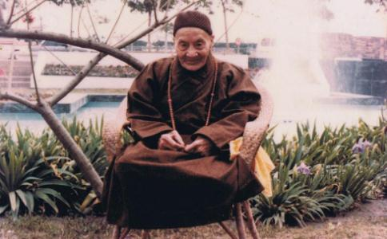

释广钦（1892—1986），法名照敬，派名广钦，俗家姓黄，福建省惠安县人，清光绪十八年（1892年）12月26日，生在一贫如洗的
广钦自幼体弱多病，到李家后，养母待他如同己生，为求平安，依当时习俗，养母带他到观音亭许愿，把他送给
一日散工，工人准备搭乘轻便推车下山，广钦忽有预感，觉得台车不安全，警告同事不要搭这班台车，别人不信，这班车果然途中翻覆。过后同事中有人说：“你自幼吃素，又能料事如神，何不
别人是顺口而说，但在广钦听来，“一言提醒梦中人，”想起自幼孤苦，养父母早逝，人生无常，说死就死，人生终要走这条路，自己何必再绕圈子呢？于是他决计返回家乡，出家修行。
就在1911年，他20岁，到泉州承天寺，向住持转尘老和尚请求出家。转尘命修苦行的瑞芳师为他剃度，承天寺是以“佛喜转瑞，广传道法”八字传承法脉，所以为他命名广钦。初出家，作外坡职事，每日种菜除草，简直和伐木工差不多。并且由于
没有走多远，心中又自忖道：“我原是为了
经此一番教诲，更刻苦自励，不敢再有退转之念。他自思自己不曾读书，不认识字，既不能讲经
到了1933年，他已经42岁了，但还未受具戒，仍是一名
是年，他到莆田县慈寿禅寺从妙义和尚受具足戒。这时，他的剃度师瑞芳已经逝世。他受戒归来，决意入山潜修，请得转尘老和尚应允，携带几套简单的衣服，外加十多斤米，到泉州城北的清源山，觅得一个岩壁上的山洞为安身之所，开始13年的潜修生活。
泉州城北的清源山，是一座茅草丛生的荒山，山如堆木，一层比一层高，而后山则丛林密布，时有乡人入山打柴。广钦进山，往高处攀登，找到一个宽五六尺、高一人许的山洞，恰可供他一人安住。于是，他就在洞中坐禅念佛。十多斤米很快就吃完了，以后就以树薯野果充饥。日久成为习惯，他就断了
清源山的后山多猴，亦有老虎出没，他居山日久，人兽和平相处，彼此了
他在洞中潜修，经常入定，传说往往一定经旬。有一次，一定逾月，不食不动，入山打柴的樵夫，日久不见这位“伏虎师”的踪迹，就找到洞中探视，见他跏趺而坐，鼻息全无，误以为已经入寂，急到承天寺报知转尘老和尚，以人死入土为安，不能任置洞中。老和尚亦感到事情有异，一方面命人上山，准备木柴，另一方面送信给卓锡永春普济寺的
广钦在洞中潜修13年，他的内证境界，非外人所能揣知。1945年，下山返回承天寺。翌年夏天，端午节后，福建永春的林觉非
广钦抵台时，已55岁，初在基隆的极乐寺、灵泉寺等处挂单。中秋节后，到台北新店，在碧潭吊桥对岸的空军公墓附近，得一废置的日式空屋住下来。翌年，于新店后街的山壁间，凿了一个山洞，命名曰广明岩——后来于此改建成了广明寺。1951年，他在山洞右后方的大石壁上，雕凿了阿弥陀佛大佛像和
在这段时间内，有一件夜度日本人鬼魂的故事。任职台糖公司的周宣德居士，住在万华昆明街的台糖宿舍，他常到附近的法华寺
有一天下午，周居士在法华寺附近的西宁南路上，遇到一位身材不高的老和尚。周居士合十为礼，请问法号，答曰：“广钦。”问住何处，答“没一定”。周居士看他步伐轻盈，目光炯炯，颇有道行的样子，乃请他到法华寺休息。二人进入法华寺，老和尚先礼佛，然后在地板上跏趺而坐。寺中斋姑欲为老和尚备晚餐，他说：“我不吃饭，只吃水果。”周居士到寺外买了一串
第二天早上，周居士与斋姑们到了寺中，老和尚仍坐在原处，手指殿前右侧一客房说：“那里有两个日本鬼，你们去翻开榻榻米，取出尸骨，让我给他们
斋姑们找工人来掀开日式房右侧的地板，果然找到了两具骷髅。老和尚叫他们把骷髅放在焚化冥纸的炉中烧掉，他在旁念佛念咒，然后回到殿中说：“已经超度了。”当日他仍没有走，吃了些香蕉。晚间仍在原处打坐。第三天早上，他说右侧后面的寮房里还有一个鬼。工人掀开日式房的地板，果然又发现一具骷髅，也送入炉中焚化，老和尚念佛持咒后说：“他也走了。”
在老和尚超度亡魂之后，寺中平安无事，夜间不再有异常事件发生了。
1951年底，老和尚听说土城、三峡界处的成福山上，有一天然古洞。有一天，他率领几名
1955年，板桥的信众们，在土城火山的半腰，购了一片竹林地供养老和尚。他去看时，由小径进入，在竹林中砍去竹子，整出一片数尺见方的土地，再用砍下的竹子编为竹榻，敷以杂草，往上一坐，对随他去的信众们说：“此处甚好，你们回去吧！”于是就在竹林中露坐，以水果为食。过了两个月，他又平出一片土地，搭建一间瓦屋，供奉佛像。拜山的信众愈来愈多，信众捐资在供佛的所在兴建大雄宝殿、三圣殿、简单的寮房。这时已是1961年以后。数年之间，“水果师”的大名已传遍台湾各地。
此处所建的寺院，老和尚为之命名“承天禅寺”，改火山名曰“清源山”，以纪念他剃度出家的祖庭，及面壁潜修的清源山。
他72岁那一年——1963年，应善信之请，到了花莲，在横贯公路的天祥住了几个月，协助当地人士兴建祥德寺。现在寺中峰塔的位置，就是老和尚当年茅亭禅坐之处。翌年又应中部善信之请，由花莲往台中，在龙井乡南寮的山上，创建广龙寺，到1964年年底才返回承天寺。就在他出门的这一段时间中，承天寺的监院竟借口屡次请老和尚回山，老和尚不回来，遂将寺中
曾有善信向老和尚建议：“这些无法无天的坏人，应该送他们到法院，让他们接受法律的制裁。”
老和尚说：“
1969年，老和尚又在土城乡公所的右后方，创建广承岩，计有大雄宝殿、两厢禅房、地下室、藏经阁、
承天寺早期所建的工程，由于地基不实，施工匆促，10多年之后，地基陷落，墙壁龟裂，不得不拆除重建。所以在1976年，先将三圣殿前的女众寮房改建为两层钢筋水泥的楼房。翌年开山整地，重建大殿、三圣殿、大悲楼等工程，也是经过多年的营建，才完成今日的宏伟庄严。
1982年9月，老和尚又派出随侍他十多年的弟子传闻法师，到高雄县六龟乡的宝来村，创建妙通寺。1984年7月，该寺工程尚在进行期间，老和尚移锡该寺，是年老和尚年已93岁。1985年底，老和尚在妙通寺传戒——按照台湾佛教界的排列顺序，1985年应该由土城的承天寺举办传戒大典，因承天寺的规模容纳不下大批戒子，所以在其分院妙通寺举行。这次报名受戒的戒子有2700多人，其中包括出家众500多位，是台湾1952年开始的34次传戒中，人数最多的一次。这当然是
广钦老和尚幼年未曾读书，所以不识字，终其一生，不曾高树法幢，登坛讲经，但他一生的行持就是经典，就是说法。有一次，佛学家蓝吉富教授，带着学生去参拜他，依严法师问他：
“请问法师，修苦行是指做什么事情，才算修苦行呢？”
老和尚答：“一切都不计较，日常生活不起分别心，就是修苦行。”
慧根法师接着问：“请问老法师，对研究教理有何看法？”
老和尚答：“没有什么看法。我觉得很自然，你们以研究教理弘法，我以修行弘法，一样弘法。”不错，老和尚是以修行弘法，他的行持就是在讲经说法，为世人树立修行的榜样，所以他对参访者说，我觉得一个新出家的人，应修一段苦行，也就是要粗衣淡饭，勤劳作务，不管是捡柴火、挑水、种菜、煮饭等，你都要做，多做苦工，智慧就易开。一个初入门的人，要把心安住，最好的办法是一心念阿弥陀佛。
老和尚承担宗门家业，却一生念佛，也一生劝人念佛。蓝吉富教授尝请问他：“您是否走
老和尚答：“不是，我偏
慧根师问他：“弘扬
老和尚答：“唉！我刚刚讲过了，你们是以读书弘法，我是以念佛弘法，都需要。”
老和尚有其幽默风趣的一面，而他的幽默风趣皆含禅机。某日，有一位教授，自认
老和尚说：“我看不出来。”
教授说：“听说您禅定功夫很高，我已到了第四禅，您怎么看不出来？”
老和尚说：“我三餐吃饱没事干。”
随手拿一张卫生纸，嘴巴动几下，转头问教授：
“卫生纸跟我讲话，你听到没有？”
那教授犹如丈二金刚，摸不着头脑，默然而退。
某日，一位清修法师来访，对老和尚说：
“我修某某三昧数十年，今来台觅地修行，请老和尚开示。”
老和尚说：“您修某某三昧数十年，应该由您与我开示。我没有修过什么三昧，无法与您言说。”
某法师又说：“我想
老和尚说：“我们闭关，到底是心要闭关，还是身要闭关？若是心要享受，我们这个四大假合之身已经够大了。若是身要闭关，五大也不够。闭关是关六根，修心是不入
有一天，一个人提着“○○七”手提箱，上得山后，神秘兮兮地要求见老和尚，并且要单独见。弟子们不放心，不许他独见，数人陪他一同见老和尚。那人到老和尚身边，附在他的耳边，郑重其事地小声说：
“老和尚，人家说您有
老和尚也神秘郑重地附在那人的耳边说：“我告诉你，我有吃就有通，没吃就不通。”
佛法的奥秘就是平淡无奇，决不是什么神通、通灵等光怪陆离的异相。
老和尚平时生活简朴，日常以水果为食，故有“水果师”的称号。80岁以后，因牙齿全脱，不能啃水果，改以流质的牛乳及果汁为食。80多岁以前，除雨天外，夜间恒在露天跏趺而坐，数十年如一日。有人发现，拂晓之时，满山林木草丛上皆布露水，惟老和尚趺坐之处，数尺的直径内地面全干。老和尚到了晚年，间或在室内或廊下过夜，仍是常坐不卧，即俗所称的“不倒单”。
八九十岁时，以至九十岁以后，圆寂以前，行不用拄杖，不用人搀扶，身体轻健，动作敏捷。
老和尚于1985年传戒之后，以要看承天寺大悲楼建筑为名，急欲回台北土城。农历十二月二十六日回到承天寺，四众弟子闻知，蜂拥上山。数日后是丙寅年正月初一，老和尚召集各分院负责弟子及承天寺大众，老和尚说他将“要走了”，对各人一一嘱咐，并说明圆寂之后，尸体火化，灵骨分别供于承天寺、广承岩、妙通寺。嘱咐完毕，示意要返回妙通寺，众弟子以老和尚坚欲南下，不敢强留，乃送老和尚回高雄六龟乡的妙通寺。这天是1986年的2月9日。
回到妙通寺后，老和尚日以继夜地念佛，有时亲敲木鱼与弟子们一起念。最后两三天，他猛力出声地念。郭惠珍居士在《倾听恒河的歌唱》一文中说：
那种“使尽每一口气恳切呼唤阿弥陀佛”的念法，非常人可及，大众轮班跟他大声念，尚且声声嘶胸痛，气力难支，何况他九十五岁高龄？……有弟子恐他以近月不食，体力难以支持，故建议老和尚说：“师父！我们念，您听就好！”老和尚瞪大了眼，斩钉截铁地说：“各人念各人的，各人生死各人了。”
农历正月初五——1986年2月13日，老和尚瞻视清澈，定静安详，毫无异样。午后2时，忽对身周众人说：“无来亦无去，没有事。”说完，还向徒众颔首莞尔，在安坐中闭上眼睛。过了一会，众人见老和尚不言不动，近前察看，原来老和尚已于众人的念佛声中安然入寂了。享年95岁，僧腊75年，戒腊54年。
老和尚一生并没高超的文章度世，亦没有动人的辞藻弘法，但他参禅念佛、平实无奇的行持却感动了、度化了千千万万的人。老和尚一生没有著作，圆寂后，弟子们把他平时的训诫，辑为《广钦老和尚方便开示录》。